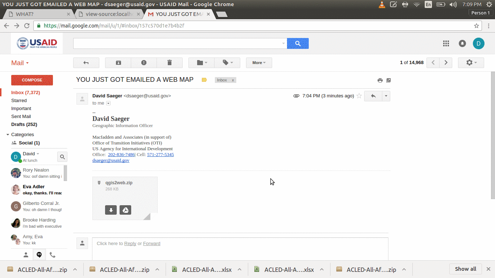
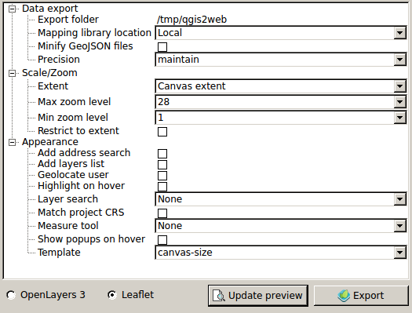
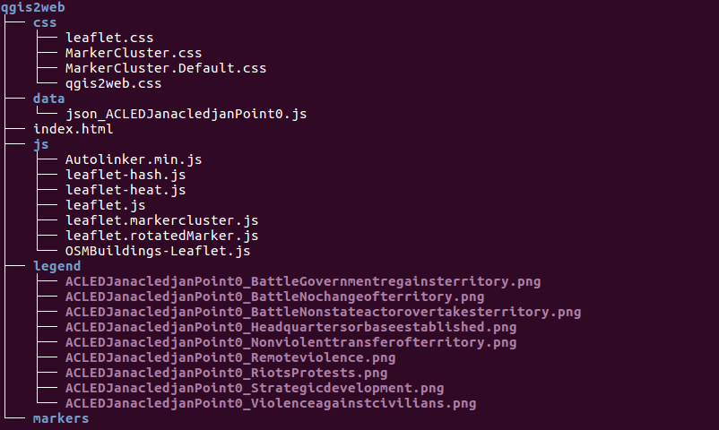
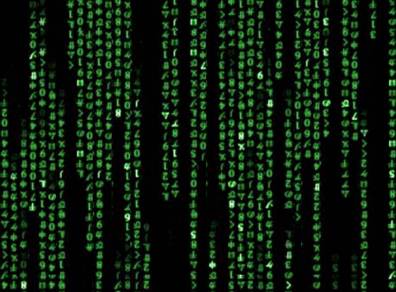

Sharing SBU Data with Web Mapping Tools
AKA
Web Maps
For Inboxes
WHAT?


+ QGIS2Web Plugin
Demo
- QGIS2Web Overview
- Load ACLED Data
- Formatting HTML Popup, The Hard Way
- Routinely updating Data
QGIS2Web PluginOverview
Layer Options
Visible
Select whether the layer will be visible on map load. This only determines visibility - the layer will be loaded regardless of this setting
Encode to JSON
If unchecked, WFS layers will remain remote WFS layers in the webmap. If checked, the layer will be written to a local GeoJSON file
Cluster
Cluster point features
Data Export + Scale + Appearance

Data Export
Export folder
The folder where the webmap will be saved
Mapping library location
Select whether to use a local copy of OL3/Leaflet, or whether to call the library from its CDN
Minify GeoJSON files
Remove unnecessary whitespace from exported GeoJSON to reduce file size
Precision
Simplify geometry to reduce file size
Scale/Zoom
Extent
Either match the current QGIS view or show all contents of all layers (only local GeoJSON and rasters, not WFS/WMS)
Max zoom level
How far the webmap will zoom in
Min zoom level
How far the webmap will zoom out
Restrict to extent
Prevent panning or zooming beyond the selected extent
Appearance
Add address search
Add field to allow searching for locations (geocode)
Add layers list
Include list of layers (with legend icons, where possible)
Geolocate user
Show user's location on map
Appearance cont.
Highlight on hover
Highlight features on mouseover
Layer search
Add option to search for values in layer field values
Match project CRS
Create webmap in same projection as QGIS project, otherwise the webmap is projected in EPSG:3857
Template
Select HTML template for webmap - add your own templates to the /qgis2web/templates directory in your .qgis2 folder
Directory Structure

Formatting HTML Popups
Few things to remember
- Convert to SQLlite
- Concatinate fields with wrapping HTML
- "html_exp"
concat(
'<h3>', "location", '</h3>
<table>',
'<tr><td>Type: <b>', "event_type" ,'</b></td></tr><tr>
<td>Actor: <b>',"actor1",'</b></td></tr>
<tr><td>Fatalities: <b>',"fatalities", '</b></td></tr>
<tr><td>Source: <b>',"source",'</b></td></tr>
</table>'
)
Now that I've made a map how do I update it?

With a few lines of code!
How will we do this?
- QGIS
- A Text Editor (today we will use Notepad++)
- Your Browser
Demo updating the map with a new dataset
- Convert the data to a geoJSON
- Add padding
- Update the
index.html file
Okay so now I can update my map...but what if I want to make it snazzy?
We can write a lot of custom code or...
Use the work of a lot smarter people and use Leaflet Plugins!
Demo adding leaflet plugins
- Where to find the plugins
- How to add them to your map
- Updaing the
index.htmlfile